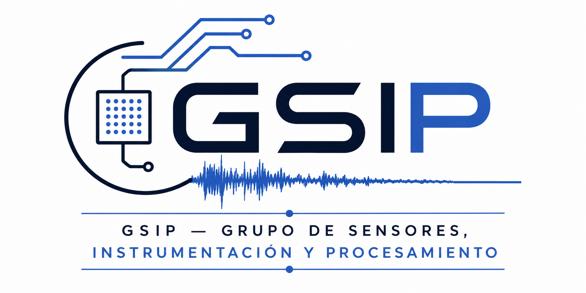

Advanced sensors, low-noise electronics, precision measurements, signal processing, and Skipper-CCD technologies.
Principal Investigators
XXX
Graduate students, collaborators, and alumni.
Our scientific publications are organized by research area and automatically generated from our publication database.
PhD theses, master's dissertations, undergraduate projects, and other academic works developed within the GSIP, reflecting the training of students and the advancement of research activities.
Current scientific and engineering developments, including detectors, electronics, instrumentation, and data processing systems.
Department of XXX
Universidad xxx
Bahía Blanca, Argentina